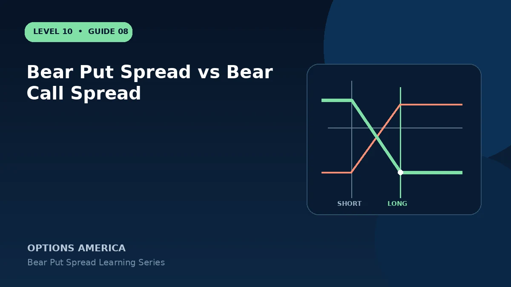

Compare bearish put debit and call credit spreads through payoff location, theta, vega, assignment and buying-power treatment.
Debit versus credit
The bear put spread pays a debit and usually starts with negative theta and positive vega. The bear call spread receives a credit and often starts with positive theta and negative vega.
Required price path
The put spread typically needs a decline through its breakeven. A call credit spread can profit if price stays below its breakeven, which may sit above the current market.
Assignment and expiration
Each contains a short American-style option that may be assigned. Dividend exposure is especially relevant to short calls, while short puts can create share-purchase obligations.
Choose by thesis
A stronger downside forecast or expected volatility expansion may support the put debit structure. A neutral-to-bearish forecast with rich volatility may better fit a call credit spread.
A practical example
Compare a 100/90 put debit spread with a 105/115 call credit spread. Both are bearish, but their winning price ranges and volatility exposures differ.
This simplified example focuses on the spread at a specific moment and expiration outcome. Live option prices also reflect the underlying price, time decay, rates, dividends, liquidity and transaction costs. Greeks are theoretical estimates, not guarantees.
Frequently asked questions
Which receives cash at entry?
The bear call spread normally receives a credit.
Which benefits from rising IV?
Often the bear put spread, depending on live net vega.
Are they equivalent?
Not unless strikes, expiration and pricing create a specific synthetic relationship.
Continue the Bear Put Spreads cluster
Explore related guides: Bear Put Spread vs Protective Put · When to Close a Bear Put Spread · Bear Put Spread Profit, Loss and Breakeven. For a structured sequence, use the free Level 10 – Bear Put Spread course.
Options involve risk and are not suitable for every investor. This material is educational and is not investment, tax or legal advice. Greeks are theoretical estimates, and contract terms and broker requirements can vary.